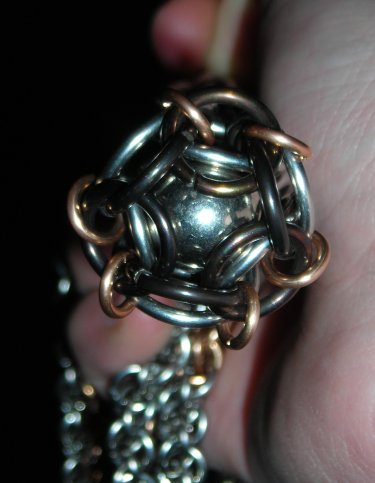
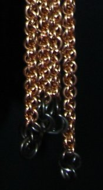

Second Flail
This piece was the third part of the commission that included the Blackened Steel Coif and Tree of Gondor inlay. I have to admit...it pretty much totally outclasses my first flail by a factor so big it's not worth writing down. The stainless is so shiny, the bronze so bold, and the overall design so much nicer, there is really no competition.The total length of the piece is just under 4', mostly dominated by the four 32" tails (yep...that means this thing has nearly twelve feet of chain in it). It took about a week to finish. I learned some fun new weaves and made some neat little innovations to complete it.
The pommel is a touch that I was particularly pleased with. If you scroll down, there is a closeup photo of it below the main picture. It consists of a steel marble trapped at the terminus of the hilt segment, with a couple black and bronze rings to close the weave off and hold everything in place.
The weave for the hilt is called, appropriately enough, Hilt Chain (it seems I wasn't the first to think of using it this way). Neat weave -- pretty stiff, but I did jam a 1/4" steel rod down the middle to make it perfectly rigid. The rod is held in place by two steel disks trapped in the weave at each end.
There is a little segment of blackened steel Box Chain weave extending off the hilt. This was mainly to break up the continuity of the stainless, and to make it fit with the blackened steel in the rest of the commission set.
The tails are in Jens Pind, a weave infamous among the mailling community at large. I don't know why...I've never had that much trouble with it. It just requires very, very dense rings. It's a lovely weave, popular for jewelry, but the density and flexibility made it perfect for this application as well.
The tails are each tipped with four blackened steel rings, visible in the second closeup.
Rings:
14 ga 1/2" ID16 ga 3/16" ID
Stainless Steel
14 ga 7/16" ID
Blackened Stainless Steel
16 ga 3/16" ID
Bronze
In the Hilt Chain, Box Chain, and Jens Pind weaves.